Ordering Objects using Seriation in R
2023-10-11
Last updated: 2023-10-11
Checks: 7 0
Knit directory: muse/
This reproducible R Markdown analysis was created with workflowr (version 1.7.0). The Checks tab describes the reproducibility checks that were applied when the results were created. The Past versions tab lists the development history.
Great! Since the R Markdown file has been committed to the Git repository, you know the exact version of the code that produced these results.
Great job! The global environment was empty. Objects defined in the global environment can affect the analysis in your R Markdown file in unknown ways. For reproduciblity it’s best to always run the code in an empty environment.
The command set.seed(20200712) was run prior to running
the code in the R Markdown file. Setting a seed ensures that any results
that rely on randomness, e.g. subsampling or permutations, are
reproducible.
Great job! Recording the operating system, R version, and package versions is critical for reproducibility.
Nice! There were no cached chunks for this analysis, so you can be confident that you successfully produced the results during this run.
Great job! Using relative paths to the files within your workflowr project makes it easier to run your code on other machines.
Great! You are using Git for version control. Tracking code development and connecting the code version to the results is critical for reproducibility.
The results in this page were generated with repository version e58802b. See the Past versions tab to see a history of the changes made to the R Markdown and HTML files.
Note that you need to be careful to ensure that all relevant files for
the analysis have been committed to Git prior to generating the results
(you can use wflow_publish or
wflow_git_commit). workflowr only checks the R Markdown
file, but you know if there are other scripts or data files that it
depends on. Below is the status of the Git repository when the results
were generated:
Ignored files:
Ignored: .Rhistory
Ignored: .Rproj.user/
Ignored: r_packages_4.3.0/
Untracked files:
Untracked: analysis/cell_ranger.Rmd
Untracked: analysis/complex_heatmap.Rmd
Untracked: analysis/sleuth.Rmd
Untracked: analysis/tss_xgboost.Rmd
Untracked: code/multiz100way/
Untracked: data/HG00702_SH089_CHSTrio.chr1.vcf.gz
Untracked: data/HG00702_SH089_CHSTrio.chr1.vcf.gz.tbi
Untracked: data/ncrna_NONCODE[v3.0].fasta.tar.gz
Untracked: data/ncrna_noncode_v3.fa
Untracked: data/netmhciipan.out.gz
Untracked: data/test
Untracked: export/davetang039sblog.WordPress.2023-06-30.xml
Untracked: export/output/
Untracked: women.json
Unstaged changes:
Modified: analysis/graph.Rmd
Note that any generated files, e.g. HTML, png, CSS, etc., are not included in this status report because it is ok for generated content to have uncommitted changes.
These are the previous versions of the repository in which changes were
made to the R Markdown (analysis/seriation.Rmd) and HTML
(docs/seriation.html) files. If you’ve configured a remote
Git repository (see ?wflow_git_remote), click on the
hyperlinks in the table below to view the files as they were in that
past version.
| File | Version | Author | Date | Message |
|---|---|---|---|---|
| Rmd | e58802b | Dave Tang | 2023-10-11 | Dissimilarity plots |
| html | 3bdf98e | Dave Tang | 2023-10-11 | Build site. |
| Rmd | 06c679a | Dave Tang | 2023-10-11 | Additional plots |
| html | f8124bc | Dave Tang | 2023-10-05 | Build site. |
| Rmd | 1e94d2f | Dave Tang | 2023-10-05 | Dendrogram |
| html | b57aaff | Dave Tang | 2023-10-05 | Build site. |
| Rmd | 8f6754a | Dave Tang | 2023-10-05 | Silence |
| html | 2e62b65 | Dave Tang | 2023-10-05 | Build site. |
| Rmd | a63df84 | Dave Tang | 2023-10-05 | Ordering objects using seriation |
Introduction
From the seriation R package.
Seriation arranges a set of objects into a linear order given available data with the goal of revealing structural information. This package provides the infrastructure for ordering objects with an implementation of many seriation/sequencing/ordination techniques to reorder data matrices, dissimilarity matrices, correlation matrices, and dendrograms (see below for a complete list). The package provides several visualizations (grid and ggplot2) to reveal structural information, including permuted image plots, reordered heatmaps, Bertin plots, clustering visualizations like dissimilarity plots, and visual assessment of cluster tendency plots (VAT and iVAT).
Installation
Install stable CRAN version.
if(! "seriation" %in% installed.packages()[, 1]){
install.packages("seriation", repos = c("https://mhahsler.r-universe.dev", "https://cloud.r-project.org/"))
}
library(seriation)
packageVersion("seriation")[1] '1.5.1.1'Getting started
Use the example
dataset SupremeCourt, which:
Contains a (a subset of the) decisions for the stable 8-yr period 1995-2002 of the second Rehnquist Supreme Court. Decisions are aggregated to the joint probability for disagreement between judges.
data("SupremeCourt")
SupremeCourt Breyer Ginsburg Kennedy OConnor Rehnquist Scalia Souter Stevens
Breyer 0.00000 0.11966 0.25000 0.20940 0.29915 0.35256 0.11752 0.16239
Ginsburg 0.11966 0.00000 0.26790 0.25214 0.30769 0.36966 0.09615 0.14530
Kennedy 0.25000 0.26709 0.00000 0.15598 0.12179 0.18803 0.24786 0.32692
OConnor 0.20940 0.25214 0.15598 0.00000 0.16239 0.20726 0.22009 0.32906
Rehnquist 0.29915 0.30769 0.12179 0.16239 0.00000 0.14316 0.29274 0.40171
Scalia 0.35256 0.36966 0.18803 0.20726 0.14316 0.00000 0.33761 0.43803
Souter 0.11752 0.09615 0.24790 0.22009 0.29274 0.33761 0.00000 0.16880
Stevens 0.16239 0.14530 0.32692 0.32906 0.40171 0.43803 0.16880 0.00000
Thomas 0.35897 0.36752 0.17735 0.20513 0.13675 0.06624 0.33120 0.43590
Thomas
Breyer 0.35897
Ginsburg 0.36752
Kennedy 0.17735
OConnor 0.20513
Rehnquist 0.13675
Scalia 0.06624
Souter 0.33120
Stevens 0.43590
Thomas 0.00000Convert to distance matrix.
d <- as.dist(SupremeCourt)
d Breyer Ginsburg Kennedy OConnor Rehnquist Scalia Souter Stevens
Ginsburg 0.11966
Kennedy 0.25000 0.26709
OConnor 0.20940 0.25214 0.15598
Rehnquist 0.29915 0.30769 0.12179 0.16239
Scalia 0.35256 0.36966 0.18803 0.20726 0.14316
Souter 0.11752 0.09615 0.24790 0.22009 0.29274 0.33761
Stevens 0.16239 0.14530 0.32692 0.32906 0.40171 0.43803 0.16880
Thomas 0.35897 0.36752 0.17735 0.20513 0.13675 0.06624 0.33120 0.43590Perform the default seriation method to reorder the objects.
my_order <- seriate(d)
get_order(my_order) Scalia Thomas Rehnquist Kennedy OConnor Souter Breyer Ginsburg
6 9 5 3 4 7 1 2
Stevens
8 Plot heatmap.
p1 <- ggpimage(d, upper_tri = TRUE) +
ggtitle("Judges (original order)")
p2 <- ggpimage(d, my_order, upper_tri = TRUE) +
ggtitle("Judges (seriation order)")
p1 + p2 & scale_fill_gradientn(colours = c("darkgrey", "skyblue"))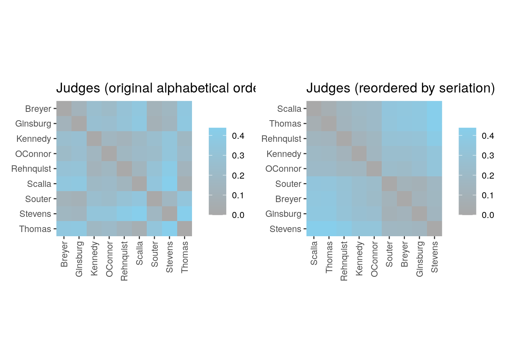
Return linear configuration where more similar objects are located closer to each other.
sort(get_config(my_order)) Scalia Thomas Rehnquist Kennedy OConnor Souter Breyer
-0.4159504 -0.4077896 -0.2656098 -0.1501451 -0.1051162 0.2139295 0.2362454
Ginsburg Stevens
0.2814388 0.6129974 Plot linear configuration.
plot_config(my_order)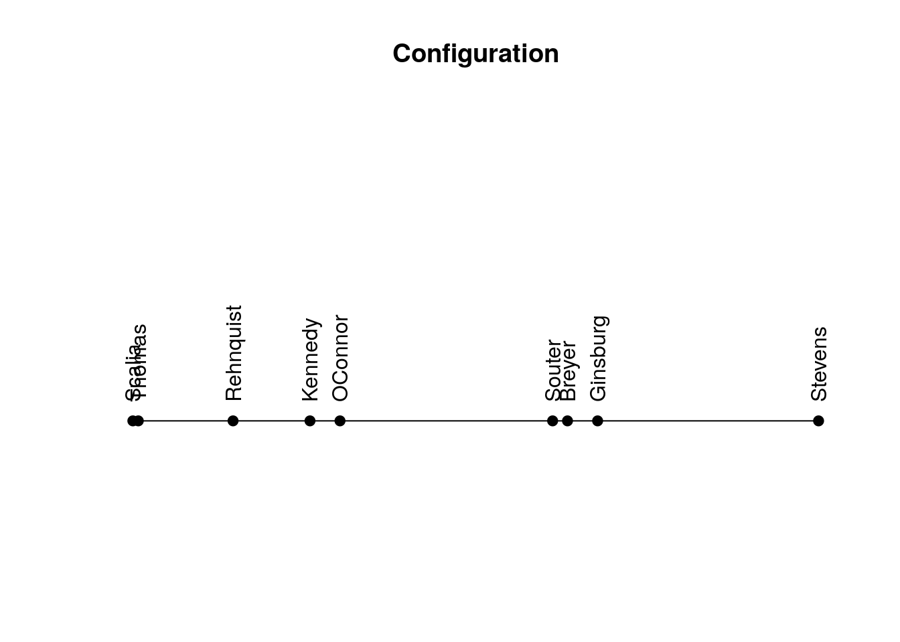
| Version | Author | Date |
|---|---|---|
| 2e62b65 | Dave Tang | 2023-10-05 |
Hierarchical cluster with average linkage.
plot(hclust(d, method = "average"))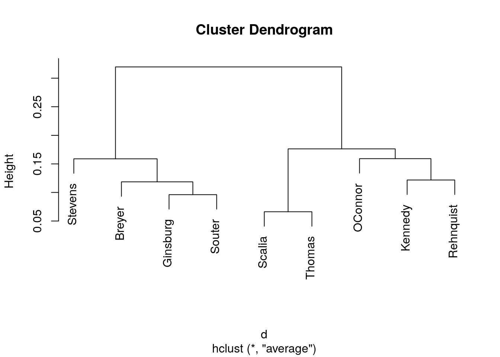
| Version | Author | Date |
|---|---|---|
| 3bdf98e | Dave Tang | 2023-10-11 |
Heatmaps with seriation
The Wood dataset consists of:
A data matrix containing a sample of the normalized gene expression data for 6 locations in the stem of Popla trees published in the study by Herzberg et al (2001). The sample of 136 genes selected by Caraux and Pinloche (2005).
data("Wood")
dim(Wood)[1] 136 6Check out Wood.
head(Wood) P A B C D E
AI161452 -0.7546223 -2.2447910 -2.4157241 -0.8181829 1.0121892 0.8839819
AI161500 -2.0621934 0.2127532 0.3556842 0.2219739 -0.6714808 0.3477471
AI161513 0.1708342 1.3265617 0.4093247 -1.2003526 -3.3316990 -2.0194944
AI161572 -1.1837279 -1.5292043 -2.1512254 -1.0145349 1.1844282 -0.4033869
AI161573 -1.8637857 -2.1495779 -2.5108412 -0.8444706 1.4952223 -1.7662259
AI161629 1.5917360 1.0212036 -0.1519370 -1.3543136 -2.7099315 -1.3129411Methods of interest for heatmaps are dendrogram leaf order-based
methods applied to rows and columns. This is done using
method = "heatmap". The actual seriation method can be
passed on as parameter seriation_method, but it has a suitable default
if it is omitted.
wood_hc_complete <- seriate(Wood, method = "Heatmap", seriation_method = "HC_complete")
wood_olo_complete <- seriate(Wood, method = "Heatmap", seriation_method = "OLO_complete")
get_order(wood_olo_complete)AI165492 AI166057 AI162004 AI164970 AI163151 AI166086 AI163756 AI162593
106 128 15 88 44 130 59 32
AI165011 AI164136 AI166095 AI162370 AI165426 AI162652 AI162561 AI164684
91 69 131 26 105 34 31 80
AI164612 AI165835 AI163485 AI162809 AI161513 AI163315 AI163528 AI166101
78 119 51 38 3 47 52 132
AI163131 AI165913 AI166111 AI161629 AI164686 AI164884 AI165668 AI164585
43 123 133 6 81 86 111 76
AI165041 AI164635 AI163821 AI162521 AI163812 AI163303 AI162216 AI163994
93 79 62 30 61 46 23 66
AI163249 AI163617 AI164793 AI165990 AI165006 AI162997 AI163650 AI166068
45 56 85 126 90 41 58 129
AI164101 AI165836 AI163012 AI165107 AI162249 AI163991 AI165062 AI161730
68 120 42 95 24 65 94 11
AI164964 AI162452 AI165206 AI164435 AI165215 AI164711 AI161827 AI163941
87 29 99 73 100 82 13 64
AI165320 AI165189 AI165691 AI163880 AI165690 AI161452 AI162402 AI163624
104 98 115 63 114 1 27 57
AI164753 AI165949 AI164359 AI163594 AI166034 AI162940 AI162710 AI162318
84 124 71 54 127 40 36 25
AI164979 AI164231 AI165974 AI161823 AI165520 AI162684 AI161697 AI162729
89 70 125 12 107 35 10 37
AI165903 AI163580 AI164546 AI162060 AI162092 AI161674 AI161638 AI164604
122 53 75 16 17 8 7 77
AI165021 AI163338 AI162215 AI165673 AI166128 AI161572 AI162094 AI162600
92 49 22 112 134 4 18 33
AI161573 AI165868 AI162928 AI165529 AI165730 AI163758 AI164060 AI163328
5 121 39 108 116 60 67 48
AI165803 AI165272 AI166182 AI165289 AI165247 AI162157 AI165826 AI165655
117 102 136 103 101 20 118 110
AI162429 AI164730 AI165162 AI163474 AI161899 AI161694 AI162148 AI164370
28 83 96 50 14 9 19 72
AI166167 AI165687 AI165175 AI162158 AI164450 AI163608 AI161500 AI165575
135 113 97 21 74 55 2 109 Ignore the numbers of the order above; they indicate the index of the
gene in Wood. AI165492 and
AI166057 are the most similar to each other. If I use those
values in Wood, I get their expression data.
Wood[c(106, 128), ] P A B C D E
AI165492 -0.825104 0.1972707 0.4277217 0.7228185 -0.8326557 -2.503835
AI166057 -1.005708 0.5118941 0.7032220 0.6993795 -1.1373152 -2.562734We can clearly see the similar expression patterns for these subset of genes.
Wood[get_order(wood_olo_complete)[1:6], ] |>
as.data.frame() |>
tibble::rownames_to_column('gene') |>
tidyr::pivot_longer(-gene) |>
ggplot(data = _, aes(name, value, group = gene, colour = gene)) +
geom_line() +
geom_point() +
theme_minimal() +
labs(title = "Genes with similar expression patterns", y = "Normalised expression", x = "location")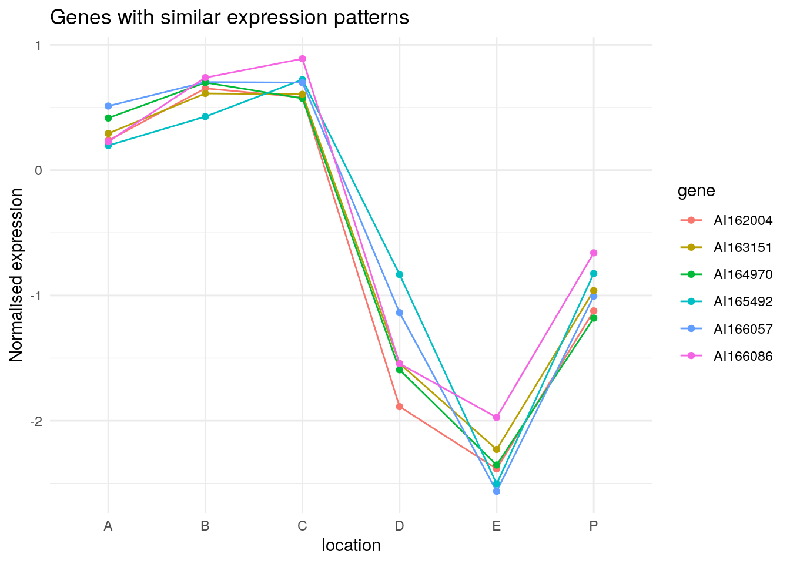
| Version | Author | Date |
|---|---|---|
| 3bdf98e | Dave Tang | 2023-10-11 |
wood_olo_complete is also a hclust.
class(wood_olo_complete[[1]])[1] "ser_permutation_vector" "hclust" Plot hierarchical clustering result.
as.dendrogram(wood_olo_complete[[1]]) %>%
plot(horiz = TRUE)
| Version | Author | Date |
|---|---|---|
| f8124bc | Dave Tang | 2023-10-05 |
Gene order of the dendrogram matches the order produced by seriation using OLO complete.
o <- wood_olo_complete[[1]]$order
identical(wood_olo_complete[[1]]$labels[o], names(get_order(wood_olo_complete)))[1] TRUELocation ordering.
get_order(wood_hc_complete, 2)P A B E C D
1 2 3 6 4 5 get_order(wood_olo_complete, 2)P A B C D E
1 2 3 4 5 6 Heatmap.
p1 <- ggpimage(Wood) +
ggtitle("Wood (no order)") +
theme(legend.position = "none")
p2 <- ggpimage(Wood, wood_hc_complete) +
ggtitle("Wood (HC complete)") +
theme(legend.position = "none")
p3 <- ggpimage(Wood, wood_olo_complete) +
ggtitle("Wood (OLO complete)")
p1 + p2 + p3 & scale_fill_gradientn(colours = c("skyblue", "red"))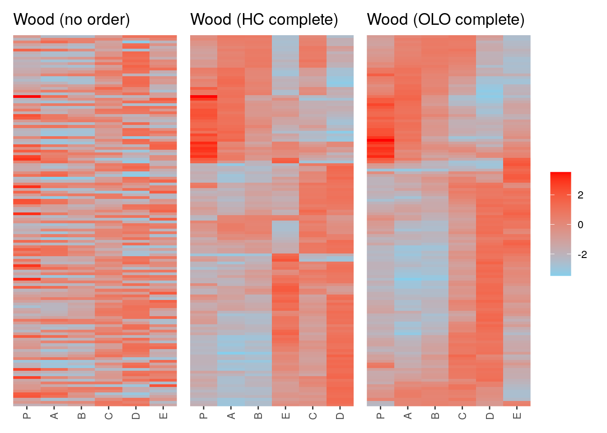
| Version | Author | Date |
|---|---|---|
| 2e62b65 | Dave Tang | 2023-10-05 |
Evaluate clusters using dissimilarity plots
Dissimilarity plots can be used to visually inspect the quality of a cluster solution. The plot uses image plots of the reordered dissimilarity matrix organised by the clusters to display the clustered data. This display allows the user to visually assess clustering quality.
The Ruspini dataset from package
clusteris a popular dataset for illustrating clustering techniques. It consists of 75 points in two-dimensional space with four clearly distinguishable groups and thus is easy to cluster.
library(cluster)
data(ruspini)
set.seed(1234)
ruspini |> sample_frac() -> ruspini
head(ruspini) x y
28 38 143
22 32 149
9 18 61
5 13 49
38 53 144
16 28 60Plot.
plot(ruspini, pch = 16)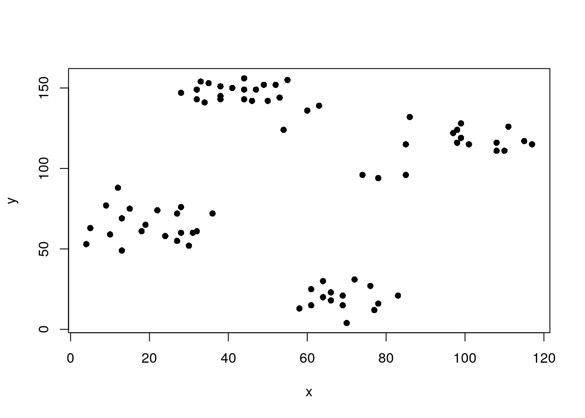
Cluster with k-means and produce a dissimilarity plot.
set.seed(1234)
cl_ruspini <- kmeans(ruspini, centers=4, nstart=5)
d_ruspini <- dist(ruspini)
ggdissplot(d_ruspini, cl_ruspini$cluster) + ggtitle("Dissimilarity Plot")
# labels= 4 = only the ellipses are labelled in the plot
clusplot(ruspini, cl_ruspini$cluster, labels = 4)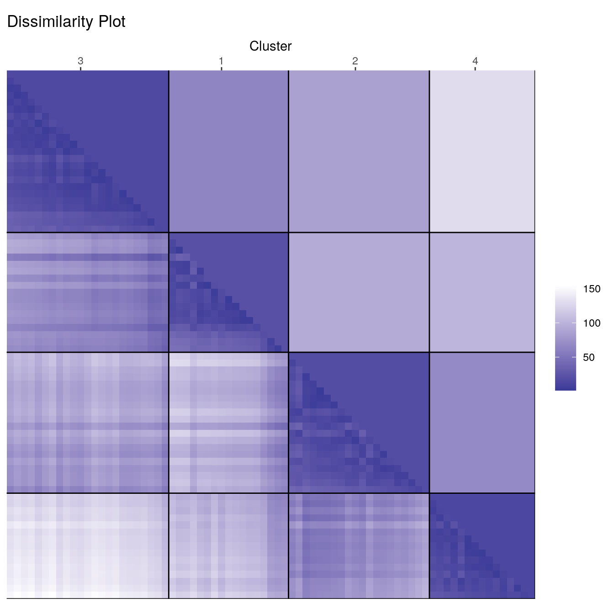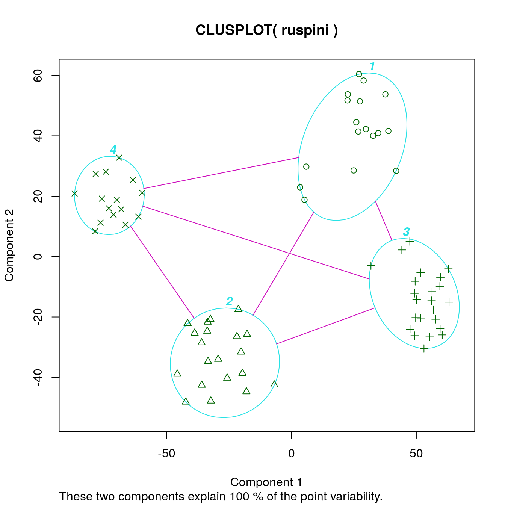
Dissimilarity plots visualise the distances between points in a distance matrix. A distance matrix for \(n\) objects is a \(n \times n\) matrix with pairwise distances as values. The diagonal contains the distances between each object and itself and therefore is always zero. In the dissimilarity plot above, low distance values are shown using a darker colour. The result of a “good” clustering should be a matrix with low dissimilarity values forming blocks around the main diagonal corresponding to the clusters.
Let’s manually recreate the lower triangle of the dissimilarity plot using base R.
my_mat <- as.matrix(d_ruspini)
my_clus <- as.integer(names(sort(cl_ruspini$cluster)))
my_order <- match(my_clus, colnames(my_mat))
my_mat <- my_mat[my_order, my_order]
image(my_mat, col = rev(RColorBrewer::brewer.pal(n = 9, name = "Blues")))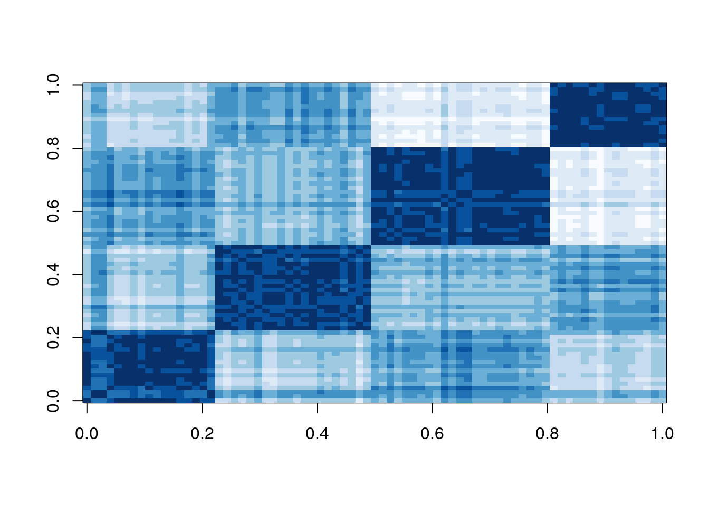
The dissimilarity plot shows a good clustering structure with the
clusters forming four dark squares. In the ggdissplot plot
the lower triangle shows the pairwise distances and the upper triangle
shows cluster averages. The clusters are ordered by similarity
indicating that closer cluster are more similar and clusters further
away from each other are the most dissimilar.
Deciding on the number of clusters is a difficult problem. Lets specify three clusters this time.
set.seed(1234)
cl_ruspini3 <- kmeans(ruspini, centers=3, nstart=5)
ggdissplot(d_ruspini, cl_ruspini3$cluster) + ggtitle("Dissimilarity Plot")
clusplot(ruspini, cl_ruspini3$cluster, labels = 4)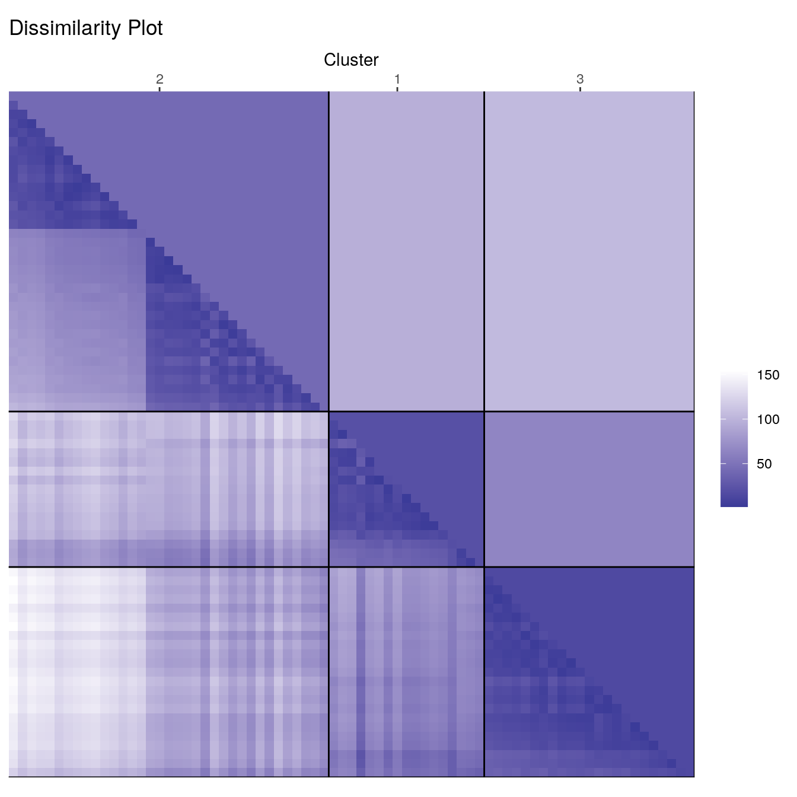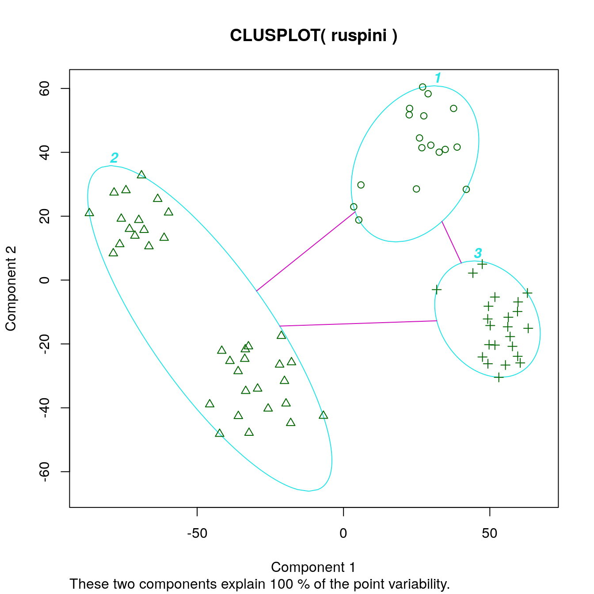
We can also use dissimilarity plots for exploring data without clustering.
ggdissplot(d_ruspini) + ggtitle("Dissimilarity plot without clustering")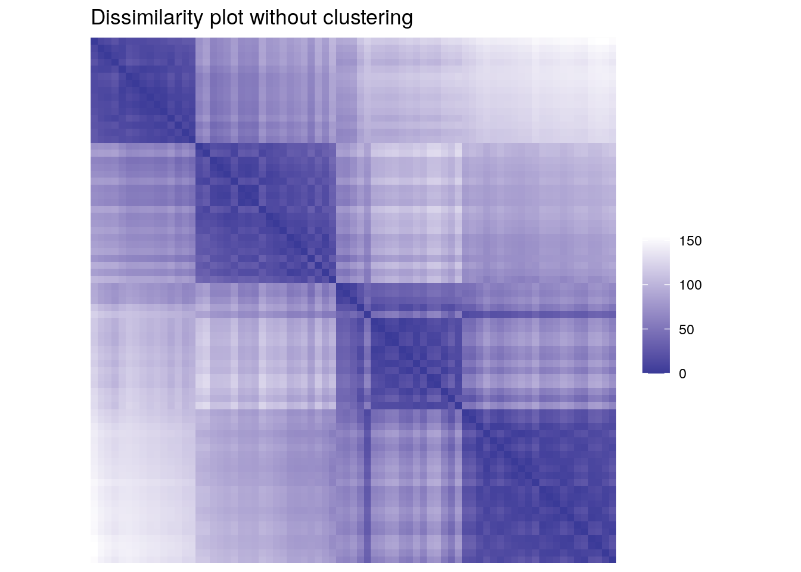
Dissimilarity plots scale well with the dimensionality of the data and by reordering clusters and objects within clusters, we can get a very concise structural representation of the clustering. Dissimiarlity plots are also helpful in spotting the mis-specification of the number of clusters used for partitioning.
sessionInfo()R version 4.3.0 (2023-04-21)
Platform: x86_64-pc-linux-gnu (64-bit)
Running under: Ubuntu 22.04.2 LTS
Matrix products: default
BLAS: /usr/lib/x86_64-linux-gnu/openblas-pthread/libblas.so.3
LAPACK: /usr/lib/x86_64-linux-gnu/openblas-pthread/libopenblasp-r0.3.20.so; LAPACK version 3.10.0
locale:
[1] LC_CTYPE=en_US.UTF-8 LC_NUMERIC=C
[3] LC_TIME=en_US.UTF-8 LC_COLLATE=en_US.UTF-8
[5] LC_MONETARY=en_US.UTF-8 LC_MESSAGES=en_US.UTF-8
[7] LC_PAPER=en_US.UTF-8 LC_NAME=C
[9] LC_ADDRESS=C LC_TELEPHONE=C
[11] LC_MEASUREMENT=en_US.UTF-8 LC_IDENTIFICATION=C
time zone: Etc/UTC
tzcode source: system (glibc)
attached base packages:
[1] stats graphics grDevices utils datasets methods base
other attached packages:
[1] cluster_2.1.4 seriation_1.5.1-1 dendextend_1.17.1
[4] patchwork_1.1.3.9000 lubridate_1.9.2 forcats_1.0.0
[7] stringr_1.5.0 dplyr_1.1.2 purrr_1.0.1
[10] readr_2.1.4 tidyr_1.3.0 tibble_3.2.1
[13] ggplot2_3.4.2 tidyverse_2.0.0 workflowr_1.7.0
loaded via a namespace (and not attached):
[1] gtable_0.3.3 xfun_0.39 bslib_0.5.0 processx_3.8.1
[5] callr_3.7.3 tzdb_0.4.0 vctrs_0.6.2 tools_4.3.0
[9] ps_1.7.5 generics_0.1.3 ca_0.71.1 fansi_1.0.4
[13] highr_0.10 pkgconfig_2.0.3 RColorBrewer_1.1-3 lifecycle_1.0.3
[17] farver_2.1.1 compiler_4.3.0 git2r_0.32.0 munsell_0.5.0
[21] getPass_0.2-2 codetools_0.2-19 httpuv_1.6.11 htmltools_0.5.5
[25] sass_0.4.6 yaml_2.3.7 later_1.3.1 pillar_1.9.0
[29] jquerylib_0.1.4 whisker_0.4.1 cachem_1.0.8 iterators_1.0.14
[33] viridis_0.6.3 TSP_1.2-4 foreach_1.5.2 tidyselect_1.2.0
[37] digest_0.6.31 stringi_1.7.12 labeling_0.4.2 rprojroot_2.0.3
[41] fastmap_1.1.1 grid_4.3.0 colorspace_2.1-0 cli_3.6.1
[45] magrittr_2.0.3 utf8_1.2.3 withr_2.5.0 scales_1.2.1
[49] promises_1.2.0.1 registry_0.5-1 timechange_0.2.0 rmarkdown_2.22
[53] httr_1.4.6 gridExtra_2.3 hms_1.1.3 evaluate_0.21
[57] knitr_1.43 viridisLite_0.4.2 rlang_1.1.1 Rcpp_1.0.10
[61] glue_1.6.2 rstudioapi_0.14 jsonlite_1.8.5 R6_2.5.1
[65] fs_1.6.2